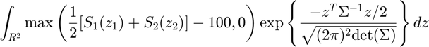
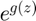
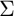

Asian option call price
Consider the following integral, which arises in the pricing of an Asian arithmetic mean call option

Notice the exponent part () coresponds to the probability distribution function of a normally distributed random vector with covariance matrix . That's the main reason we will generate IID standard normal random variables. We omit the mathematical justification here.
Contents
Parameters
abstol = 0.02; % absolute error tolerance reltol = 0; % relative error tolerance Sigma = [.5 .5; .5 1]; % covariance matrix
Integral approximation
Monte Carlo methods can be used to estimate expectations, the mean value of a random variable's function. For continuous variables, expectations take the form of integrals.
Therefore, if we can express an integral as an expectation, it is possible to estimate its value using Monte Carlo methods.
A = chol(Sigma); % Sigma = A'*A s_1 = @(z_1)100*exp(-0.0225 + 0.3*z_1); s_2 = @(z_2)100*exp(-0.045 + 0.3*z_2); z = @(n)randn(n, 2)*A; g = @(n)gsub(n, z, s_1, s_2); % encapsulate inner function tic; [muhat, out] = meanMC_g(g, abstol, reltol); toc;
Output results
disp(['The estimated fair price is ' num2str(muhat)])
The estimated fair price is 9.4481
Function
function [price] = gsub(n, z, s_1, s_2) %GSUB Pricing of an Asian arithmetic mean call option zn = z(n); s1 = s_1(zn(:, 1)); s2 = s_2(zn(:, 2)); asianCallOpt = .5*(s1 + s2) - 100; price = max([asianCallOpt zeros(n, 1)], [], 2); end
Elapsed time is 0.760853 seconds.
Author: Alejandro Madriñán Fernández